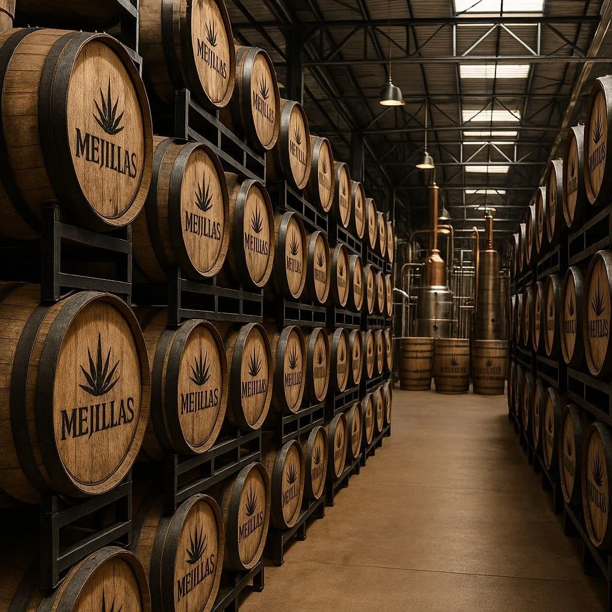

The land & the family
Great tequila is grown before it is made. Ours is grown two thousand meters up, by people whose name is on the field.
Red clay, thin air, slow sugar
Los Altos de Jalisco sits high on Mexico's central plateau. The iron-rich soil drains fast, the sun is close, and the nights turn cold. These conditions force blue agave to grow slowly and store more sugar in its heart.
That stress is the flavor. Highland agave gives Mejillas its ripe sweetness and bright fruit, where valley agave leans earthy and herbal. We would not trade the wait for anything.
A family that honors the plant
Every piña in a Mejillas batch comes from one of the region's most respected multi-generation agave-growing families: farmers who understand not just how to grow agave, but how to honor it. They decide, plant by plant, when an agave has earned its harvest.
Mejillas was born when the team behind Melo Beverage NA Company, looking for something more ancient and elemental than the drinks they built their name on, came to the highlands and found partners who had been raising it for generations.
Who makes it, exactly
Every legitimate tequila carries a NOM, the number that identifies the distillery where it was actually made. Ours is printed on every label and on every product page of this site, because you should never have to guess.
NOM 1609 · Distilled at ____, Jalisco
Mezcal NOM 1609 · Distilled at ____, Oaxaca
See what happens inside those walls: read the process.
